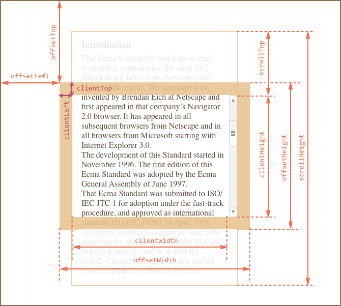

Образец документа
<div id="example">
...Текст...
</div>
<style>
#example {
width: 300px;
height: 200px;
border: 25px solid #E8C48F; /* рамка 25px */
padding: 20px; /* поля 20px */
overflow: auto; /* прокрутка */
}
</style>Результат выглядит так:

Метрики
У элементов существует ряд свойств, содержащих их внешние и внутренние размеры. Мы будем называть их «метриками».
Метрики, в отличие от свойств CSS, содержат числа, всегда в пикселях и без единиц измерения на конце.
Вот общая картина:
